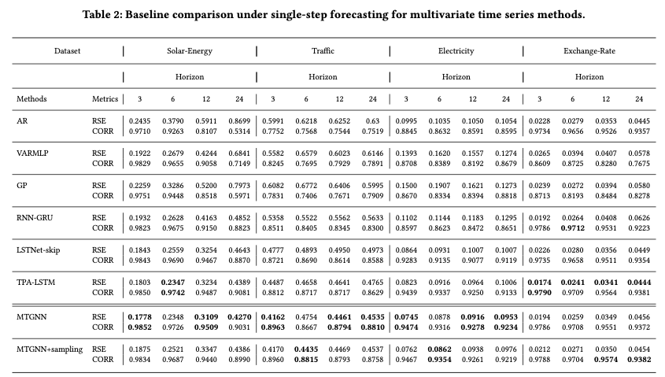
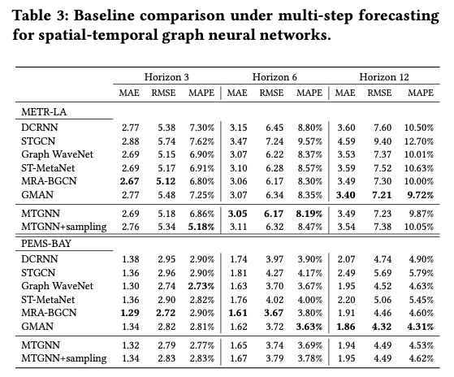
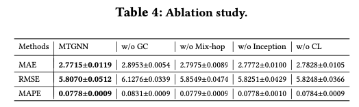

「论文阅读」-Connecting the Dots基于GNN进行多变量时间序列预测
Abstract
Modeling multivariate time series has long been a subject that has attracted researchers from a diverse range of fields including economics, finance, and traffic. A basic assumption behind multivariate time series forecasting is that its variables depend on one another but, upon looking closely, it’s fair to say that existing methods fail to fully exploit latent spatial dependencies between pairs of variables. In recent years, meanwhile, graph neural networks (GNNs) have shown high capability in handling relational dependencies. GNNs require well-defined graph structures for information propagation which means they cannot be applied directly for multivariate time series where the dependencies are not known in advance. In this paper, we propose a general graph neural network framework designed specifically for multivariate time series data. Our approach automatically extracts the uni-directed relations among variables through a graph learning module, into which external knowledge like variable attributes can be easily integrated. A novel mix-hop propagation layer and a dilated inception layer are further proposed to capture the spatial and temporal dependencies within the time series. The graph learning, graph convolution, and temporal convolution modules are jointly learned in an end-to-end framework. Experimental results show that our proposed model outperforms the state-of-the-art baseline methods on 3 of 4 benchmark datasets and achieves on-par performance with other approaches on two traffic datasets which provide extra structural information.
问题
- 多变量时间序列预测的基本假设是？
- 现有方法能否充分利用多变量时间序列中隐藏的空间依赖关系？
- 是否可以通过一个图学习模块自动提取变量间依赖关系？
- 现有可用于多变量时间序列预测的模型有？
- 时空图神经网络在建模多变量时间序列预测问题时面临哪些挑战？
- 变量间依赖关系知道吗？
- 给定一个预定义的图结构，其就是最优的图结构吗？能否在训练中被优化？
- 从数据中自适应学习图结构是否会带来计算效率的瓶颈？如何解决？
记录
问题
文章研究的主题是基于图神经网络进行多变量时间序列预测，其中核心在于“Connecting the Dots”，即为节点构建联系/连接。
如何理解文中的“Connecting the Dots”？我们可以先回顾多变量时间序列预测问题，这个问题的基本假设是多个变量之间存在依赖关系（假设是交通预测的场景，则每个变量是交通传感器所记录的历史交通状态，不同传感器之间的历史交通状态是有依赖关系的）。然而，文章作者认为现有的方法未能充分利用变量之间的隐藏的空间依赖性。针对今年来在关系型数据中具有较高潜力、表现良好的GNN模型来说，GNN要求输入一个预先定义良好的图结构用于消息传递，这意味着当多变量间的依赖关系无法预先得知时，无法使用GNN进行时间序列预测。
方法
因此，这篇文章提出一种通用的图神经网络框架。
实验
主要结果
single-step forecasting
只根据历史交通状态预测未来一个时间步的交通状态

multi-step forecasting
同时预测未来多个时间步的交通状态

消融实验
验证一些关键组件对于模型效果提升的贡献
-
w/o GC
-
w/o Mix-hop
-
w/o Inception
-
w/o CL
